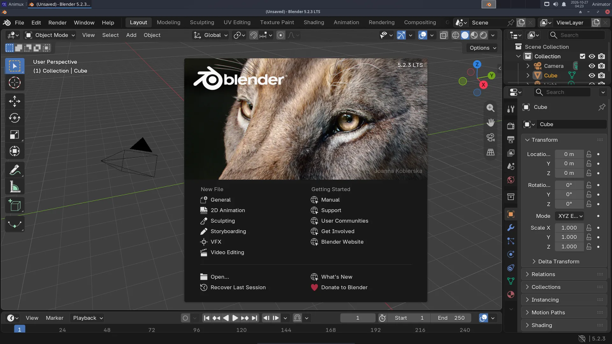

| Blender | |
|---|---|
| Menu | 3D Animation → Modellers → Blender |
| Version | 5.2.3 LTS |
| Command | blender |
| Good for | Beginner to professional |
| Files | .blend; imports/exports FBX, OBJ, glTF, USD, Alembic, STL, PLY, SVG |
| Licence | GPL-3.0-or-later |
| Website | blender.org |
| Self-test | animux-selftest blender |
Blender does almost everything in a 3D film: modelling, sculpting, texturing, rigging, animation, physics (cloth, smoke, fluids), rendering, compositing and even video editing. It is used for feature films, TV series, games and advertising. Animux includes the official Blender 5.2.3 LTS from blender.org ("LTS" = long-term support, with bug fixes until 2028), not the old Blender 3.4 that Debian 12 ships.
Start Blender#
Animux → 3D Animation → Modellers → Blender, or type blender. The first time, a welcome screen (the splash) appears; click anywhere outside it to close it.


The screen#

| Part | Where | What for |
|---|---|---|
| Top bar | top | menus (File, Render…) and workspaces (Layout, Modeling, Animation, Shading…): ready-made screen layouts for each job |
| 3D Viewport | middle | your scene. Middle mouse button to orbit, wheel to zoom |
| Toolbar | left of the viewport | select, move, rotate, scale… |
| Outliner | top right | every object in the scene (camera, light, cube) |
| Properties | bottom right | settings, in tabs: render, output, object, modifiers, materials… |
| Timeline | bottom | frames, play button, keyframes |
Your first hour#
Follow the tutorials in order:
- Your first 3D render: object, material, light, camera, render, save.
- A turntable animation: keyframes and a video file.
- A character with MakeHuman: a human with a skeleton, in Blender.
- From idea to finished film: how the steps fit together.
Render engines#
| Engine | Use it for | Speed |
|---|---|---|
| EEVEE | previews, stylised and cartoon looks, motion graphics | seconds per frame on a good graphics card |
| Cycles | realistic light, glass, reflections | seconds to minutes per frame |
| Workbench | quick clay previews | instant |
Choose in Properties → Render → Render Engine. On computers without a strong graphics card (and in virtual machines), Cycles on the CPU is the most reliable choice. EEVEE needs OpenGL 4.3; in a VM it runs through software emulation and is slow.
GPU rendering in Cycles needs NVIDIA's driver (CUDA/OptiX) or AMD's HIP. See Adding software, then Edit → Preferences → System.
Grease Pencil: 2D inside Blender#
File → New → 2D Animation gives a drawing canvas with layers, onion skin and a timeline. Draw with a tablet, animate frame by frame, and combine with 3D objects.
Add-ons included#
- MPFB 2.0.18 (MakeHuman Plugin for Blender): the MPFB tab in the side panel (press N in the viewport) creates human characters. It is switched on automatically. See MakeHuman and MPFB.
- Maya Workflow Kit 0.7.0 (new in r16.3, off until you switch it on): see Coming from Maya below.
- Blender's own extensions (Edit → Preferences → Get Extensions) can be installed from extensions.blender.org when you are online.
Coming from Maya#
Trained on Autodesk Maya? The Maya Workflow Kit (by ohnsk, free, GPL-3.0) makes Blender work like Maya: Maya hotkeys and Alt+mouse navigation, QWER tools, the Space hotbox and marking menus, the shelf, the Channel Box, the Outliner with persp/top/front/side, the time slider and a Maya-style command line. It contains no Autodesk code.
It is installed but off, because it changes Blender's keys and layout. To switch it on:
- Close Blender.
- Menu Animux Tools → Blender: Maya Workflow Kit on/off, answer y (or type
animux-blender-maya onin a terminal). - Start Blender. The kit's welcome window says that nothing has changed yet; click Make Blender feel like Maya.
In Blender, the Maya | Blender switch at the top right (or Ctrl+Alt+Shift+M) changes between the Maya layout and Blender's own. To remove the kit from Blender completely, close Blender and run the menu entry again (or animux-blender-maya off). animux-blender-maya status says whether it is on.
The kit's help is in Edit → Preferences → Add-ons → Maya Workflow Kit. Blender tutorials and this guide use Blender's own keys: switch back with the Maya | Blender switch when you follow them.
Rendering without opening Blender#
Great for long renders, render farms and scripts:
blender -b shot.blend -a # whole animation, settings from the file
blender -b shot.blend -o //frames/f_#### -F PNG -s 1 -e 48 -a # frames 1–48 as PNG
blender -b shot.blend -f 10 # just frame 10
blender -b --python make_scene.py # run a Python script
-b (background) must come first. // means "next to the .blend file". See Command-line rendering and Flamenco for many computers.
Files#
- Blender saves .blend files. File → Save (Ctrl+S). Blender keeps
.blend1backups next to them. - File → Import / Export: FBX, OBJ, glTF (games and the web), USD and Alembic (studio pipelines), STL (3D printing), SVG.
- Rendered pictures are not saved automatically: in the render window use Image → Save As.
Learn more#
- The official manual: https://docs.blender.org/manual/en/5.2/ (also Help → Manual).
- Blender Studio's free courses: https://studio.blender.org/training/.
- The sample file
/usr/share/animux/samples/blender/turntable.pybuilds a small scene by script.